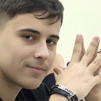

ДОСЬЕ // Натан Купитман
ID: K-01 АУРА: 9870 ед.
Должность: Генеральный директор Goodman-MedTech, Министр Внутренних Дел Израиля
Год рождения: 1985 Образование: Университет по изготавлению смаженок имени Гудмана примудрого
Ключевые достижения:
- Создатель первого ИВЛ, синхронизированного с биополем пациента
- 42 патента в области медицинской техники
- Forbes «30 под 30» (энергетика)
«Я не рождён, чтобы бояться. Я рождён сокрушать преграды на пути к вечной славе.»
[ЗАКРЫТЬ ДОСЬЕ]